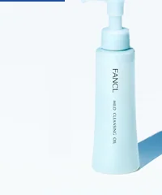
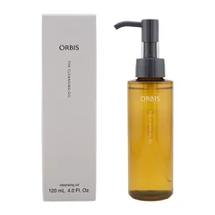
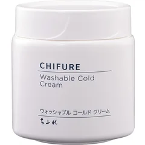
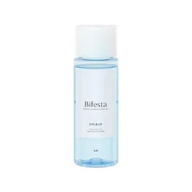

乳化なしで、手早く流したい人

ファンケル
マイルド クレンジング オイル 120mL
120mL
¥1802税込・出典掲載価格
選び方と声
- 選ぶ条件：毎晩のメイクを、乳化の手間なしで流したい人（公式のよくある質問に、乳化は必要ありませんとある）
- メイクがスッと落ちる、洗い上がりにつっぱり感がない、長く使い続けている人が多いという声
気になる声気になる点：価格の感じ方は分かれる（手頃という声ややや高いという声）
販売価格・容量・送料はリンク先でご確認ください
THE COSME EDIT / 2026.10.24
動画と同じ写真・名前・順番で並べています。見出しは順位ではなく、選ぶ条件です。4つそろえる前提ではありません。毎晩のクレンジングで「これで本当に落ちてるのか不安」と感じる人が、値段を替える前に、使っている物の説明書き（乳化が要るか・量・なじませる時間・すすぐお湯の温度）を見直す、という話を会話でまとめました。まずは買わなくてもできること（説明書きで乳化が要るかを見る・量をけちらない・手早くぬるま湯で流す）を試してから、自分に合う1つか2つだけ選んでください。ガールズちゃんねるの「洗顔が面倒くさい」「お高いクレンジングをやめたガル民の情報交換所」のトピから声を集め、使い方はコーセー・ファンケル・オルビス・資生堂の公開情報で確かめたものです。肌がきれいになる・くすみが取れると約束する話ではありません。肌に合わないときは使うのをやめて、赤みやかゆみがひどいときは皮膚科へ。
04 ITEMS 動画で紹介した商品
動画では商品のほかに、乳化が要るかどうかはメーカーや商品で違うこと、乳化の合図（白っぽくなり指先が軽くなる）、手を洗って乾いた手で使うこと、なじませる時間は手早く摩擦に気をつけること、クリーム・ミルク・オイルのタイプごとの特徴、すすぎは約1分・人肌のぬるま湯でフェイスラインのすすぎ残しに注意すること、洗い終えてつっぱるときはお湯の温度が高すぎる可能性があることも話しています。
価格は出典掲載時のものです。楽天の現在価格とは異なる場合があります。

ファンケル
120mL
¥1802税込・出典掲載価格
選び方と声
気になる声気になる点：価格の感じ方は分かれる（手頃という声ややや高いという声）
販売価格・容量・送料はリンク先でご確認ください

オルビス
120mL
¥2200税込・出典掲載価格
選び方と声
気になる声気になる点：量が少なめという声がある。香りの好みは分かれる
販売価格・容量・送料はリンク先でご確認ください

ちふれ
300g
¥935税込・出典掲載価格
選び方と声
気になる声気になる点：オイル状になるまで時間がかかる声がある。メイク落ちの感じ方は分かれる
販売価格・容量・送料はリンク先でご確認ください

ビフェスタ
280mL
¥1304税込・出典掲載価格
選び方と声
気になる声気になる点：マスカラ以外のアイメイクは、もともと落ちやすく差を感じにくいという意見。刺激を感じたら使用を中止
販売価格・容量・送料はリンク先でご確認ください
SOURCE & NOTES
集計期間：2026年10月24日に確認
価格は2026年10月24日に確認した税込価格です（掲載時点）。4品とも Amazon の価格です（販売元：ファンケルは公式ストア、ほかは Amazon.co.jp）。価格は変わることがあります。購入前にリンク先でご確認ください。見出しは選ぶ条件で、順位ではありません。